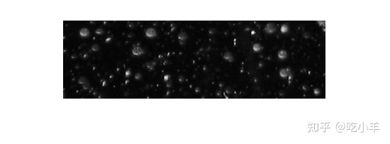
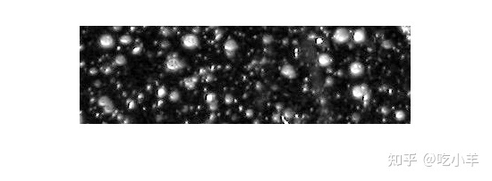
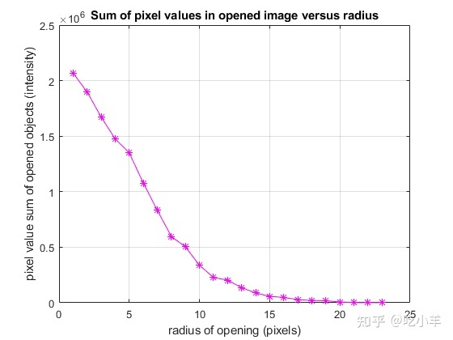
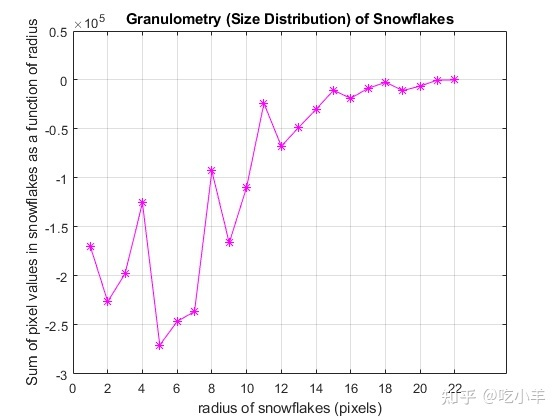
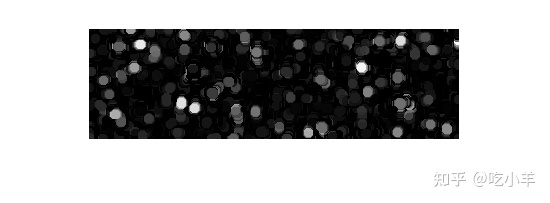

Home
本示例说明如何使用粒度分析来计算图像中雪花的大小分布。粒度测定法确定图像中对象的大小分布，而无需先明确分割（检测）每个对象。
读入图像
阅读“ snowflakes.png”图像，它是雪花的照片。
I = imread('snowflakes.png');
imshow(I)

增强对比度
第一步是使图像中的强度对比度最大化。您可以使用adapthisteq函数来执行此操作，该函数执行对比度限制的自适应直方图均衡。使用imadjust函数重新缩放图像强度，以使其填充数据类型的整个动态范围。
claheI = adapthisteq(I,'NumTiles',[10 10]); claheI = imadjust(claheI); imshow(claheI)

确定增强图像中的强度表面积分布
粒度测定法估计雪花的强度表面积分布与尺寸的关系。粒度分析法将图像对象比作石头，其大小可以通过在尺寸增大的筛子上进行筛分并在每次通过后收集剩余物来确定。通过使用大小增加的结构元素做图像开操作并计数每次开操作后剩余的强度表面积（图像中像素值的总和）来筛选图像对象。
选择一个反极限，以使强度表面积在您增加结构元素的大小时变为零。出于显示目的，将表面积数组中的第一个条目保留为空。
radius_range = 0:22;
intensity_area = zeros(size(radius_range));
for counter = radius_range
remain = imopen(claheI, strel('disk', counter));
intensity_area(counter + 1) = sum(remain(:));
end
figure
plot(intensity_area, 'm - *')
grid on
title('Sum of pixel values in opened image versus radius')
xlabel('radius of opening (pixels)')
ylabel('pixel value sum of opened objects (intensity)')

计算分布的一阶导数
两个连续的开操作之间的强度表面积的显著下降，表示图像包含与较小的开操作可比较大小的对象。这等效于强度表面积数组的一阶导数，其中包含图像中雪花的大小分布。使用diff函数计算一阶导数。
intensity_area_prime = diff(intensity_area);
plot(intensity_area_prime, 'm - *')
grid on
title('Granulometry (Size Distribution) of Snowflakes')
ax = gca;
ax.XTick = [0 2 4 6 8 10 12 14 16 18 20 22];
xlabel('radius of snowflakes (pixels)')
ylabel('Sum of pixel values in snowflakes as a function of radius')

提取具有特定半径的雪花
请注意图中的最小值和半径。最小值告诉您图像中的雪花具有这些半径。最小点越趋向负向，则该半径处的雪花累积强度越高。例如，最负的最小值出现在5像素半径标记处。您可以按照以下步骤提取半径为5像素的雪花。
open5 = imopen(claheI,strel('disk',5));
open6 = imopen(claheI,strel('disk',6));
rad5 = imsubtract(open5,open6);
imshow(rad5,[])

======================================================================
我的测试结果及程序
下面是我测试的代码：

注：本文根据MATLAB官网内容修改而成。